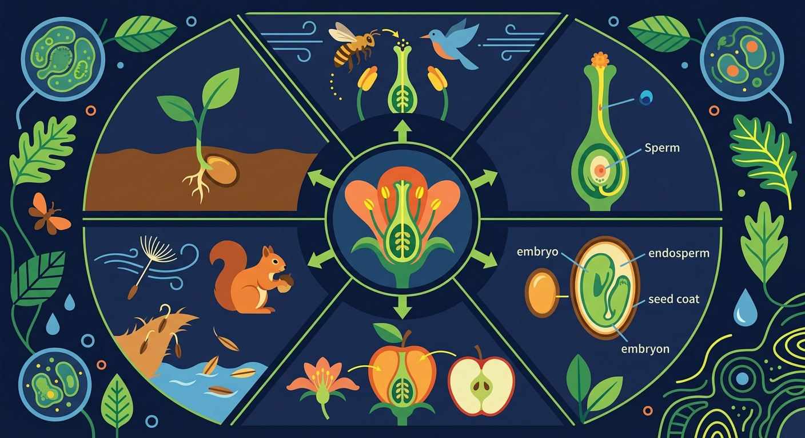

揭开双受精的奥秘——花如何变成果实，胚珠如何发育成种子

🎯 能说出果实和种子的结构组成
🎯 能判断常见植物的食用部分属于果实/种子
🎯 能分析番茄发育过程中子房的变化
春天百花盛开，秋天果实累累——花是怎样变成果实的？苹果里的种子又是如何形成的？
花粉落到柱头上，最终两粒精子要完成两次受精，这在植物界独一无二。双受精是什么？子房和胚珠分别发育成什么？
本课将揭示被子植物特有的双受精过程，掌握子房→果实、胚珠→种子的发育规律，理解果实与种子的结构对应关系。
花粉在柱头上萌发，长出花粉管
两个精子分别与卵细胞、极核融合
子房发育为果实（果皮+种子）
胚珠发育为种子（胚+胚乳）
❓ 为什么苹果是果实而花生米不是？
❓ 种子是怎么在果实里'睡觉'的？
❓ 吃西瓜吐的籽和草莓上的点是一回事吗？
学完这一课，这些问题你都能自信地回答。
下列属于种子的是？
西瓜子来自花的哪个结构？
花粉从雄蕊（花粉囊）传到雌蕊（柱头）上的过程叫传粉。
花粉落在柱头上后：花粉萌发 → 长出花粉管 → 花粉管穿过花柱、子房壁 → 进入胚珠（经珠孔）→ 释放两个精子
花粉管中的两个精子进入胚珠后：
这种两个精子同时完成两次受精的现象叫双受精，是被子植物特有的。
→ 果皮
→ 种子
→ 胚
→ 胚乳
→ 果实
🔑 记忆要点：子房 → 果实；胚珠 → 种子；受精卵 → 胚；受精极核 → 胚乳
用解剖刀观察桃子的果皮、果肉、种皮结构
子房壁发育成果皮，胚珠发育成种子
对比浆果（番茄）和核果（桃）的种子包裹方式
延时摄影展示南瓜子房膨大成果实的过程
解释'一个葵花籽是一个果实'的说法是否正确
将左侧花的结构拖入右侧对应的发育结果
关于果实发育的正确叙述是
设计对照实验验证种子对果实发育的影响
先独立作答，再点选项查看对错与错因。
枇杷果实干瘪的根本原因是
下列哪项不是种子形成的必要条件
超市购买的无籽西瓜是通过
枇杷果实中可食用的果肉部分由花的____发育而来
答案：花托
枇杷属于假果，食用部分是膨大的花托而非子房壁
种子中的____储存着双子叶植物萌发所需的营养
答案：子叶
胚乳被消耗后子叶成为营养器官
✅ 区分食用器官（如胡萝卜是根）
💡 生活用语与生物学概念混淆
✅ 强调种子必须由胚珠发育而来
💡 忽视发育起源的生物学定义
口诀：子房变果皮，胚珠成种子，想要分得清，先看发育史
类比：果实像妈妈的子宫，种子就是里面的宝宝
传粉受精之后，子房并不是一个静止的结构——它会"长大变身"。这背后是激素信号在指挥：受精完成后，子房合成生长素等激素，启动发育程序。
🧩 一一对应关系：子房壁 → 果皮；胚珠 → 种子；受精卵 → 胚；受精极核 → 胚乳。整个子房膨大发育为果实。
🔑 常见误区：桃子的"果肉"其实是果皮（由子房壁发育），桃核的硬壳也是果皮的一部分（内果皮），核里的"仁"才是种子。草莓表面那些小颗粒，每一颗才是一枚真正的果实。
🌍 演化意义：果实包被并保护种子，还能借动物取食把种子带到远处，这是植物繁衍的重要策略。
子房壁 → 果皮 | 胚珠 → 种子 | 子房 → 果实
受精卵 → 胚 | 受精极核 → 胚乳
⭐ 双受精 = 被子植物特有，两次融合同时进行
（中考题）草莓表面小颗粒是？
下列植物可食部分发育来源与其他不同的是？
若豌豆荚被虫蛀空，受影响的是？